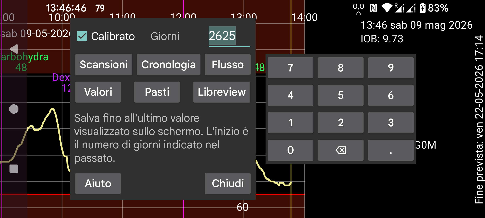

ar be de es hi it ja ko nl pl ru tr uk uz zh en
Esporta i dati da Juggluco in un file.
I pasti sono salvati in html. Tutti gli altri dati sono salvati in .tsv (Tab-separated values). Possono essere caricati in programmi come LibreOffice Calc, Microsoft Excel, Mathematica o R. È una sorta di .csv con tabulazioni invece di virgole usate per separare gli elementi. Viene usata la codifica UTF-8.
Il significato delle colonne può essere trovato su https://www.juggluco.nl/Juggluco/webserver.html.
Giorni: A partire da Juggluco 7.1.0, puoi selezionare il numero di giorni da salvare. La data di fine è il bordo destro dello schermo. Quindi, se visualizzi dati passati in Juggluco, vengono esportati solo i dati vecchi (lo stesso come in menu centrale sinistro→Statistiche).
Calibrato: Salva i valori calibrati. Con questa impostazione, Scansioni, Flusso e Cronologia memorizzano sia il valore calibrato che quello grezzo per ogni elemento. Nel formato Libreview, viene salvato solo il valore calibrato se disponibile, altrimenti il valore non calibrato (grezzo).
A partire da Juggluco 7.1.0, è anche possibile ricevere questi dati tramite il webserver in Juggluco (Menu sinistro->Impostazione->Scambio dati->Webserver), vedi https://www.juggluco.nl/Juggluco/webserver.html
Libreview: Salva i dati in formato Libreview. Questo rende possibile importare dati da sensori non Freestyle Libre in programmi e servizi web che richiedono quel formato. Per i sensori Dexcom vengono salvati i valori dei 5 minuti e per i sensori Sibionics un valore di flusso ogni 5 minuti. Salva anche i valori della cronologia dei sensori Libre 0, 2 e 3. Questo salverà solo dosi di insulina, carboidrati e note, dopo aver assegnato etichette a queste categorie in menu sinistro→Impostazione→Scambio dati→ Libreview→Invia valori.